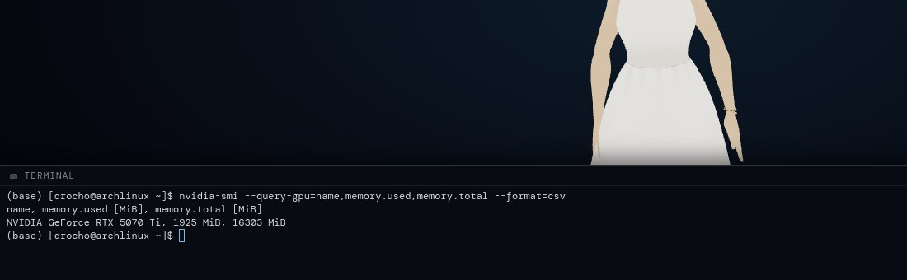

Hands
Turn on tools and she opens apps, runs commands in a real terminal and searches the web. Give her a job with several steps, like "organize my downloads by type", and a separate agent does it, with risk-tiered approvals, an audit log and undo. Anything destructive asks you first; anything high-risk needs the button, not just your voice.

How she decides who does what
- One command
- Something whose exact shape she already knows: list a folder, open an app. Instant, handled by the backend.
- A skill
- A named shortcut you can add with a markdown file: a description, one action, the phrases that trigger it. She picks the skill; the backend runs the command.
- A job
- Several steps or decisions. Handed to the agent, which asks before anything risky and reports back. With the agent on, her own free-form commands go through it too.